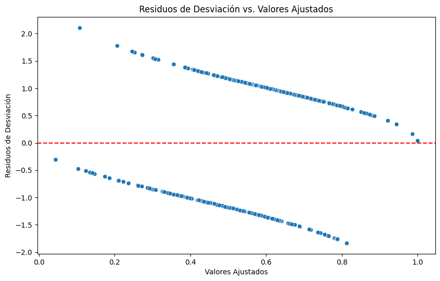
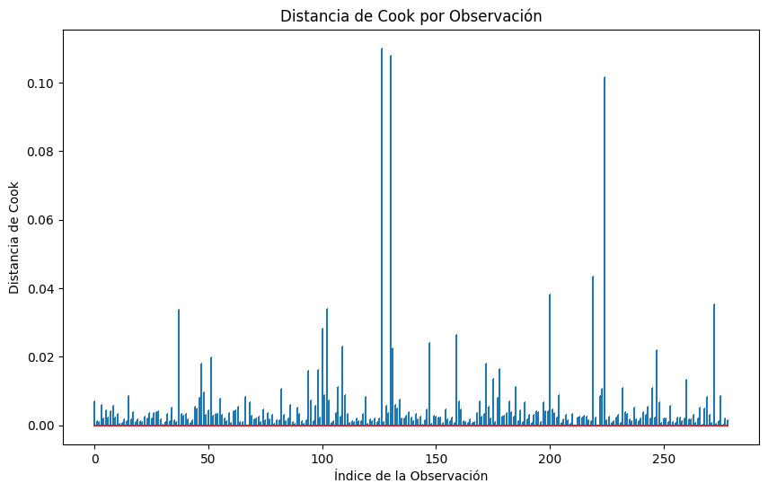
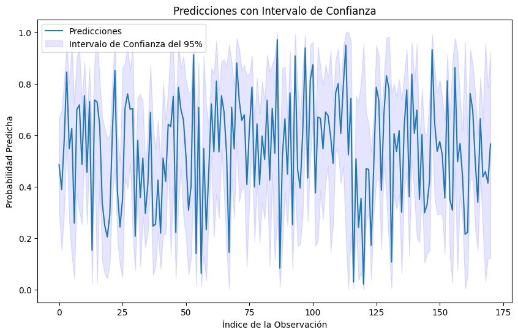
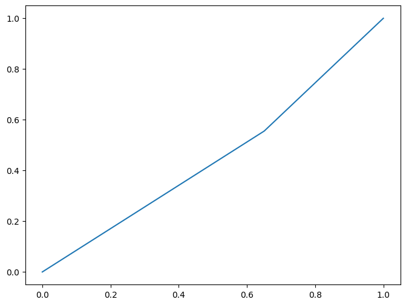

import pandas as pd
import statsmodels.api as sm
from statsmodels.formula.api import glm
from sklearn.model_selection import train_test_split
from sklearn.metrics import classification_report, confusion_matrix
Cargar una base de datos famosa. Por ejemplo, el conjunto de datos de cáncer de mama de Wisconsin
from sklearn.datasets import load_breast_cancer
data = load_breast_cancer()
df = pd.DataFrame(data.data, columns=data.feature_names)
df['target'] = data.target
# Realizar estadisticas descriptivas
df.head()
| mean radius | mean texture | mean perimeter | mean area | mean smoothness | mean compactness | mean concavity | mean concave points | mean symmetry | mean fractal dimension | ... | worst texture | worst perimeter | worst area | worst smoothness | worst compactness | worst concavity | worst concave points | worst symmetry | worst fractal dimension | target | |
|---|---|---|---|---|---|---|---|---|---|---|---|---|---|---|---|---|---|---|---|---|---|
| 0 | 17.99 | 10.38 | 122.80 | 1001.0 | 0.11840 | 0.27760 | 0.3001 | 0.14710 | 0.2419 | 0.07871 | ... | 17.33 | 184.60 | 2019.0 | 0.1622 | 0.6656 | 0.7119 | 0.2654 | 0.4601 | 0.11890 | 0 |
| 1 | 20.57 | 17.77 | 132.90 | 1326.0 | 0.08474 | 0.07864 | 0.0869 | 0.07017 | 0.1812 | 0.05667 | ... | 23.41 | 158.80 | 1956.0 | 0.1238 | 0.1866 | 0.2416 | 0.1860 | 0.2750 | 0.08902 | 0 |
| 2 | 19.69 | 21.25 | 130.00 | 1203.0 | 0.10960 | 0.15990 | 0.1974 | 0.12790 | 0.2069 | 0.05999 | ... | 25.53 | 152.50 | 1709.0 | 0.1444 | 0.4245 | 0.4504 | 0.2430 | 0.3613 | 0.08758 | 0 |
| 3 | 11.42 | 20.38 | 77.58 | 386.1 | 0.14250 | 0.28390 | 0.2414 | 0.10520 | 0.2597 | 0.09744 | ... | 26.50 | 98.87 | 567.7 | 0.2098 | 0.8663 | 0.6869 | 0.2575 | 0.6638 | 0.17300 | 0 |
| 4 | 20.29 | 14.34 | 135.10 | 1297.0 | 0.10030 | 0.13280 | 0.1980 | 0.10430 | 0.1809 | 0.05883 | ... | 16.67 | 152.20 | 1575.0 | 0.1374 | 0.2050 | 0.4000 | 0.1625 | 0.2364 | 0.07678 | 0 |
5 rows × 31 columns
df.info()
<class 'pandas.core.frame.DataFrame'>
RangeIndex: 569 entries, 0 to 568
Data columns (total 31 columns):
# Column Non-Null Count Dtype
--- ------ -------------- -----
0 mean radius 569 non-null float64
1 mean texture 569 non-null float64
2 mean perimeter 569 non-null float64
3 mean area 569 non-null float64
4 mean smoothness 569 non-null float64
5 mean compactness 569 non-null float64
6 mean concavity 569 non-null float64
7 mean concave points 569 non-null float64
8 mean symmetry 569 non-null float64
9 mean fractal dimension 569 non-null float64
10 radius error 569 non-null float64
11 texture error 569 non-null float64
12 perimeter error 569 non-null float64
13 area error 569 non-null float64
14 smoothness error 569 non-null float64
15 compactness error 569 non-null float64
16 concavity error 569 non-null float64
17 concave points error 569 non-null float64
18 symmetry error 569 non-null float64
19 fractal dimension error 569 non-null float64
20 worst radius 569 non-null float64
21 worst texture 569 non-null float64
22 worst perimeter 569 non-null float64
23 worst area 569 non-null float64
24 worst smoothness 569 non-null float64
25 worst compactness 569 non-null float64
26 worst concavity 569 non-null float64
27 worst concave points 569 non-null float64
28 worst symmetry 569 non-null float64
29 worst fractal dimension 569 non-null float64
30 target 569 non-null int64
dtypes: float64(30), int64(1)
memory usage: 137.9 KB
df.columns = df.columns.str.replace(' ', '_') # Reemplazar espacios con guiones bajos
X_train, X_test, y_train, y_test = train_test_split(df.drop('target', axis=1), df['target'], test_size=0.3, random_state=42)
from sklearn.preprocessing import StandardScaler
# Estandarizar las características
scaler = StandardScaler()
X_train_scaled = scaler.fit_transform(X_train)
X_test_scaled = scaler.transform(X_test)
# Convertir a DataFrame
X_train_scaled_df = pd.DataFrame(X_train_scaled, columns=X_train.columns)
X_test_scaled_df = pd.DataFrame(X_test_scaled, columns=X_train.columns)
# Añadir la columna de intercepción manualmente para statsmodels
X_train_final = sm.add_constant(X_train_scaled_df)
X_test_final = sm.add_constant(X_test_scaled_df)
# Asegurarse de que y_train y y_test son Series
y_train = pd.Series(y_train, index=X_train.index)
y_test = pd.Series(y_test, index=X_test.index)
# Aquí hay que usar X_train_final en lugar de X_train_scaled
train_df = pd.concat([X_train_final, y_train], axis=1)
# Asegúrate de que el nombre de la columna de la variable objetivo en 'train_df' es 'target' para que coincida con la fórmula
train_df['target'] = y_train
# Ahora ajusta el modelo usando 'train_df' con la fórmula correcta
modelo = glm("target ~ " + " + ".join(X_train_final.columns[1:]), family=sm.families.Binomial(), data=train_df).fit()
# Ver el resumen del modelo
print(modelo.summary())
Generalized Linear Model Regression Results
==============================================================================
Dep. Variable: target No. Observations: 279
Model: GLM Df Residuals: 248
Model Family: Binomial Df Model: 30
Link Function: Logit Scale: 1.0000
Method: IRLS Log-Likelihood: -172.23
Date: Wed, 15 Nov 2023 Deviance: 344.46
Time: 23:11:50 Pearson chi2: 275.
No. Iterations: 6 Pseudo R-squ. (CS): 0.1314
Covariance Type: nonrobust
===========================================================================================
coef std err z P>|z| [0.025 0.975]
-------------------------------------------------------------------------------------------
Intercept 0.2561 0.136 1.886 0.059 -0.010 0.522
mean_radius 19.1567 10.034 1.909 0.056 -0.510 38.823
mean_texture -0.4021 0.527 -0.762 0.446 -1.436 0.632
mean_perimeter -10.7499 10.070 -1.068 0.286 -30.486 8.987
mean_area -6.8622 3.093 -2.218 0.027 -12.925 -0.799
mean_smoothness -0.1021 0.398 -0.256 0.798 -0.883 0.679
mean_compactness 0.4771 0.974 0.490 0.624 -1.433 2.387
mean_concavity 1.6628 1.281 1.298 0.194 -0.848 4.173
mean_concave_points -0.5267 1.118 -0.471 0.638 -2.718 1.664
mean_symmetry -0.5947 0.279 -2.134 0.033 -1.141 -0.048
mean_fractal_dimension -0.4402 0.584 -0.754 0.451 -1.585 0.704
radius_error -3.0074 1.632 -1.843 0.065 -6.206 0.191
texture_error 0.1957 0.331 0.592 0.554 -0.452 0.844
perimeter_error 5.2551 1.649 3.187 0.001 2.024 8.487
area_error -0.8637 0.981 -0.881 0.379 -2.786 1.059
smoothness_error 0.2299 0.313 0.734 0.463 -0.384 0.844
compactness_error -1.8790 0.779 -2.412 0.016 -3.406 -0.352
concavity_error 0.8267 0.954 0.866 0.386 -1.044 2.697
concave_points_error -0.2878 0.548 -0.525 0.599 -1.362 0.786
symmetry_error -0.6339 0.322 -1.967 0.049 -1.265 -0.002
fractal_dimension_error 0.9423 0.650 1.450 0.147 -0.332 2.216
worst_radius -0.7657 4.345 -0.176 0.860 -9.282 7.751
worst_texture 0.3991 0.685 0.583 0.560 -0.943 1.741
worst_perimeter -8.5525 3.338 -2.562 0.010 -15.095 -2.010
worst_area 6.1768 3.007 2.054 0.040 0.283 12.071
worst_smoothness 0.4561 0.482 0.946 0.344 -0.489 1.402
worst_compactness 2.2076 1.009 2.188 0.029 0.230 4.185
worst_concavity -1.2971 0.914 -1.419 0.156 -3.089 0.495
worst_concave_points -0.0993 0.885 -0.112 0.911 -1.834 1.636
worst_symmetry 0.6601 0.414 1.595 0.111 -0.151 1.471
worst_fractal_dimension -0.7094 0.709 -1.001 0.317 -2.099 0.680
===========================================================================================
residuos_desviacion = modelo.resid_deviance
residuos_desviacion
1 -1.738687
3 -1.281917
4 -1.060413
5 -1.690851
7 -1.309637
...
388 0.830688
389 -1.298804
391 0.519533
392 -0.970962
397 0.935380
Length: 279, dtype: float64
import matplotlib.pyplot as plt
import seaborn as sns
# Gráfico de residuos de desviación
plt.figure(figsize=(10, 6))
sns.scatterplot(x=modelo.fittedvalues, y=residuos_desviacion)
plt.title('Residuos de Desviación vs. Valores Ajustados')
plt.xlabel('Valores Ajustados')
plt.ylabel('Residuos de Desviación')
plt.axhline(y=0, color='r', linestyle='--')
plt.show()

# Calcular la distancia de Cook
influence = modelo.get_influence()
cooks_d = influence.cooks_distance[0]
import numpy as np
plt.figure(figsize=(10, 6))
plt.stem(np.arange(len(cooks_d)), cooks_d, markerfmt=",")
plt.title('Distancia de Cook por Observación')
plt.xlabel('Índice de la Observación')
plt.ylabel('Distancia de Cook')
plt.show()

# Verificar multicolinealidad
from statsmodels.stats.outliers_influence import variance_inflation_factor
vif_data = pd.DataFrame()
vif_data["feature"] = X_train_final.columns
vif_data["VIF"] = [variance_inflation_factor(X_train_final.values, i) for i in range(len(X_train_final.columns))]
print(vif_data)
feature VIF
0 const 1.000000
1 mean_radius 4244.685794
2 mean_texture 12.744146
3 mean_perimeter 4358.462839
4 mean_area 384.921731
5 mean_smoothness 8.131800
6 mean_compactness 51.860224
7 mean_concavity 79.768640
8 mean_concave_points 65.415636
9 mean_symmetry 4.158345
10 mean_fractal_dimension 17.053843
11 radius_error 80.667493
12 texture_error 5.268454
13 perimeter_error 81.788643
14 area_error 42.118761
15 smoothness_error 4.433393
16 compactness_error 15.221920
17 concavity_error 17.695010
18 concave_points_error 12.380510
19 symmetry_error 4.955979
20 fractal_dimension_error 11.503961
21 worst_radius 767.734019
22 worst_texture 21.683685
23 worst_perimeter 459.014045
24 worst_area 348.937124
25 worst_smoothness 11.252581
26 worst_compactness 33.938000
27 worst_concavity 32.216921
28 worst_concave_points 38.277926
29 worst_symmetry 9.241391
30 worst_fractal_dimension 18.720407
# Realizar predicciones
predicciones = modelo.predict(X_test_final)
# Obtener intervalos de confianza
predicciones_summary_frame = modelo.get_prediction(X_test_final).summary_frame()
print(predicciones_summary_frame)
mean mean_se mean_ci_lower mean_ci_upper
0 0.484554 0.095030 0.308416 0.664615
1 0.389160 0.154298 0.151481 0.694522
2 0.576504 0.143656 0.300524 0.811790
3 0.845363 0.091516 0.580927 0.955672
4 0.547357 0.151387 0.267451 0.800207
.. ... ... ... ...
166 0.664086 0.100286 0.450274 0.826736
167 0.437955 0.114211 0.238873 0.659246
168 0.458285 0.414732 0.031024 0.957180
169 0.413761 0.202628 0.120710 0.783951
170 0.565284 0.280682 0.121742 0.924233
[171 rows x 4 columns]
plt.figure(figsize=(10, 6))
plt.plot(predicciones_summary_frame['mean'], label='Predicciones')
plt.fill_between(predicciones_summary_frame.index, predicciones_summary_frame['mean_ci_lower'], predicciones_summary_frame['mean_ci_upper'], color='b', alpha=0.1, label='Intervalo de Confianza del 95%')
plt.title('Predicciones con Intervalo de Confianza')
plt.xlabel('Índice de la Observación')
plt.ylabel('Probabilidad Predicha')
plt.legend()
plt.show()

predicciones = modelo.predict(X_test_final)
predicciones_clasificadas = [1 if x > 0.5 else 0 for x in predicciones]
print(confusion_matrix(y_test, predicciones_clasificadas))
print(classification_report(y_test, predicciones_clasificadas))
[[22 41]
[48 60]]
precision recall f1-score support
0 0.31 0.35 0.33 63
1 0.59 0.56 0.57 108
accuracy 0.48 171
macro avg 0.45 0.45 0.45 171
weighted avg 0.49 0.48 0.48 171
from sklearn.metrics import confusion_matrix, roc_curve, auc
fpr_grande, tpr_grande, _ = roc_curve(y_test, predicciones_clasificadas)
auc_grande = auc(fpr_grande, tpr_grande)
plt.figure(figsize=(8, 6))
plt.plot(fpr_grande, tpr_grande, label=f'Modelo Grande (AUC = {auc_grande:.2f})')
[<matplotlib.lines.Line2D at 0x7cff6ea7e1a0>]
